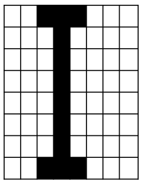

3.3.6 Representing Images
Table of Contents
1 Representation of Images
Learn It
Bitmap Images
- An image is divided into pixels (Short for
Picture Element), each pixel represents the smallest single point on the screen. - A pixel can only be one colour at a time, and when a picture is
saved, the colour of
each individual pixelmust be stored inbinary. - The more bits that are used to store each pixel, the more colours are potentially available. VDUs display output using millions of pixels.
- Each pixel is represented by a number of bits and programs can specify where each pixel is placed on the screen and what colour it is going to be.
- An image represented this way is called a
Bitmap. - The following 1-bit image shows how pixels are made up of binary code.
- The digit
0is used forBlackand the digit1is used forWhite. - In reality, images are far more complexed than the image shown, with
colour depthandimage resolutionhaving a big impact on the quality and file size of an image.
- The image above (Which has been enlarged) is 8 pixels by 8, so
64 pixelsin total. - Only black and white are being used, so a single
bitwould be enough to store each pixel. - Using
0for black and1for white we would use64-bitsor8-bytesto store the pixels in this image.
2 Colour Depth
Learn It
- The number of bits per pixel is referred to as the
Colour Depth. It is important for the quality of the colours in an image. - If
1-bitis used to encode each pixel, then only two colours can be used (21). As we mentioned before, the0represents black and the1represents white. - To be able to represent more than two colours in an image, each pixel requires more bits.
- To work out the minimum required colour depth from the number of colours in the image, convert the number of colours to a power of 2.
- For Example:
- A
1-bitimage can display 21, or2 colours. - A
2-bitimage can display 22, or4 colours. - A
3-bitimage can display 23, or8 colours. - A
4-bitimage can display 24, or16 colours. - A
5-bitimage can display 25, or32 colours. - A
6-bitimage can display 26, or64 colours. - A
7-bitimage can display 27, or128 colours. - A
8-bitimage can display 28, or256 colours. - A
16-bitimage can display 216, or65,536 colours.
- A
- If the colour depth is increased, more bits are used to represent each pixel, and the overall size of the file will increase.
- The following image demonstrates how the quality of an image changes depending on the number of bits used.
Badge It
Silver: Complete the two questions below:
- (a) Convert the following binary data into a 5 x 5 pixel image, where 0 represents black and 1 represents white:
11111 00100 00100 00100 00100. - (b) Convert the black and white image below into binary data, where 0 represents black and 1 represents white.

3 Image Resolution
Learn It
Image Resolution- Also known as Image Size
- Resolution is the number of pixels (Picture Elements) or dots
(Dots per inch - dpi)that make up an image. - The
greaterthe number of pixels per inch —> thesharperthe image will be, the greater thequalityand thelarger the files sizeof the image. - Pixel density is measured in pixels per inch
(PPI)and is used to describe the resolution of a computer screen, camera or scanner. - An image on the Internet is typically
72PPI, which is a low resolution. If you try to enlarge the image on the screen, the image will become pixelated and blurry. See example below showing how an image becomes blurred if you increase its size on the screen:
The size of an image file depends on the colour depth and dimensions. The size of an audio file depends on the sample rate and bit depth. The size of an image file and an audio file can be very large.
4 Calculating the File Size
Learn It
- The
file sizeof an image depends on thecolour depthand thenumber of pixelsin the image.Size in bits= Image Width x Image Height x Colour DepthSize in bytes= )Image Width x Image Height x Colour Depth)/8-bits
W ---> The width of an image, measured in pixels. H ---> The height of an image, measured in pixels. D ---> The colour depth; the number of bits used to store each pixel. To convert file size from *bytes* to *kilobytes*, divide the number of bytes by 1,000. To convert from *bytes* to *megabytes*, divide the number of bytes by 1,000,000.
Try It
Example 1
- An image captured in
128 colours, with asize of 2,000 pixels by 1,000 pixels, is saved on a memory stick. - What is the size in bytes/MB of the file?
Size in bytes = (Width x Height x Colour Depth)/8-bits = (2,000 x 1,000 x 7)/8-bits = 1,750,000 bytes (1.75MB)
Badge It
Gold: Answer the following questions:
- (a) Define the term
Pixel? - (a) Calculate the
size in bytesof ablack and white imagethat is96-pixels wide and 1,024 pixels high.
Badge It
- Platinum: Calculate the files sizes of the following digital images:
- (a) An image captured in
512 colours, with asize of 3,100 pixels by 2,000 pixels. - (b) An image captured with a colour depth of 24-bits, with a
size of 4220 pixels by 2641 pixels. - (c) An image captured in
256 colours, with asize of 640 pixels by 480 pixels.